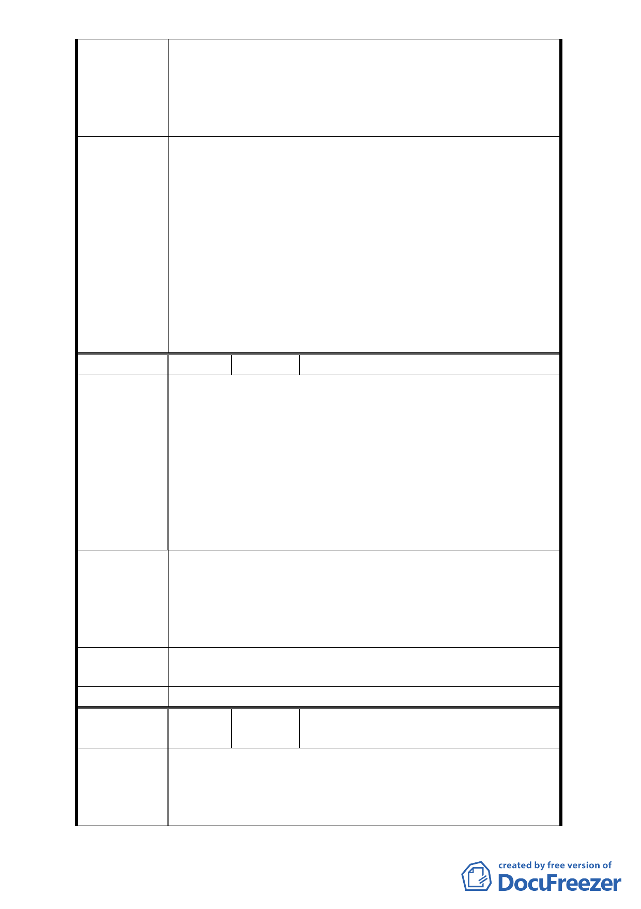

等，本案考量基地條件與環境，維持原公展計畫書有關
第三種住宅區容積率、開挖率、不適用停車獎勵等規定。
4. 本案因修正後計畫其重劃負擔比率較公展案提高，為利
土地開發利用，刪除公展計畫書第 13 頁「且不得作為
容積移轉接受基地」等文字。
1.本案公園南側規劃為住宅區正對新光路一段66巷形成路
衝問題，同意依市府都市發展局本次會議所提於本案細
部計畫書都市設計管制要點規定「住宅區鄰公園側退縮6
公尺留設帶狀或開放空間」，並述明供公眾使用且不得設
委員會決議 置圍籬，另增訂鄰公園之街廓最小基地規模700平方公尺
或完整街廓，餘依本會第614次委員會議決議修正後通
過。
2.另本案公園及開放空間等之規劃已兼顧土地所有權人及
週邊地區住戶之權益，計畫書之變更緣由應增述本案規
劃對周邊地區景觀權之維護。
編
號2
陳情人 基泰建設股份有限公司 羅孝先
原文山區政大段四小段 350 地號原即為第三種住宅
區，且所有權人與鄰地即為同一所有權人，亦無第三人通
行之事實存在，今 貴會擬變更上開之細部計劃將 350 地號
一併劃入變更，與原始變更之目的並無相關，且因變更案
陳 情 理 由 之範圍內土地日後使用強度及申請建築執照有諸多限制，
如停車獎勵及都審及開挖率及不可容積移轉等，造成原擬
合併同區段 801.802 及 807 等土地重新改建之土地效用大幅
下降，除非將 350 地號部份分割不予合併其它鄰地共同興
建，但又造成畸零地等。
1.將 350 地號自本計劃中排除。
2.如 350 地號擬合倂原基地其它非本屬變更計劃案或鄰地
建 議 辦 法 興建時，本計劃案中相關規定，如都審及限制停車獎勵
及地下室開挖率及容積移轉等規定應予不適用並於計劃
案說明書中註記。
專案小組審 計畫區南側 807 地號面積約 10 平方公尺，因存在既有
查 結 論 房屋，建議將該地號土地劃出本案重劃範圍。
委員會決議 同陳情案 1
編
號 3.
陳情人
紫藤樓社區管理委員會、張文遠主任委
員
1.萬興里為文山區人口數最多的里，人口達 14548 人(98 年
陳情理由
3 月)，然而，如圖一所示，目前新光路一段、秀明路二
段一帶並無閭鄰公園的設置，不符都市計畫通盤檢討實
施辦法第 16 條之規定『公園：包括閭鄰公園及社區公園。
-7-